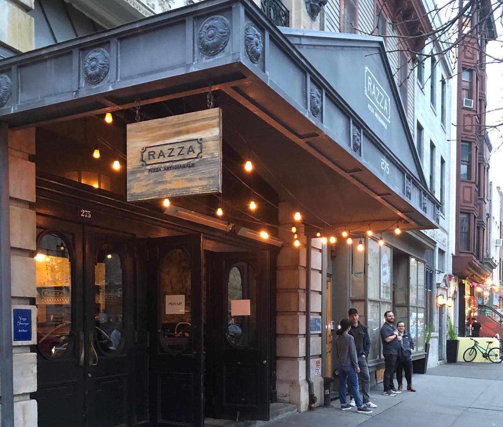

Top Restaurants
Jump to ContentNew Jersey is home to many amazing restaurants. Here are a few well-known, and even iconic locations in the Garden State. This is by no means a comprehensive list, but all the restaurants listed below, from diners to fine dining, are acclaimed and very highly rated.

De Lorenzo's Tomato Pies
Robbinsville
This historic restaurant is known for their unique take on pizza. At De Lorenzo’s, the tomato pie is made by putting the cheese first and the pizza sauce on top. Originally, De Lorenzo’s was located in Trenton, but now it is in Robbinsville. Their new location is much more modern than the original shop, but the pizza is just as good.
Mustache Bill’s Diner
Barnegat Light
Featured on Diners, Drive-ins, and Dives, this diner – located on Long Beach Island – is known for its fresh fried seafood and amazing breakfast. Mustache Bill’s is only open three days a week, but both locals and visitors have been enjoying the food since it opened in 1959. If asked, the cook will create pancakes with custom shapes for customers which is fun for both adults and kids.
Chez Catherine
Westfield
Known for its superior French Cuisine, Chez Catherine offers a fine dining experience. It is recognized as one of the best French restaurants in New Jersey, with their award-winning menu. The dishes served here represent traditional French cuisine, but the chef adds new flavors, giving them a twist.
10th Ave Burrito Co.
Belmar
10th Ave Burrito offers delicious Mexi-Cali cuisine. Featured on Diners, Drive-ins, and Dives, offers amazing wings, tacos, burritos, and more. It is a staple in Belmar and anyone in the area should experience 10th Ave Burrito. The inside is vibrant, with the walls covered in pieces of art by local artists and live music to create an amazing dining experience.
Zeppoli
Collingswood
There is an abundance of Italian American restaurants scattered around New Jersey, and Zeppoli is one of the most notable. Sicily is the main inspiration behind this restaurant, with its warm atmosphere, very limited seating, and classic and simple Italian cuisine. Zeppoli serves anything from half a roasted chicken, to stewed rabbit, to an array of pasta dishes inspired by Sicily.
Razza Pizza Artigianale
Jersey City
Razza Pizza Artigianale is not only known for their pizza, but the fresh bread too. Razza Pizza is known as one of the best pizza places in New Jersey, serving wood-fired pizza and using fresh, seasonal ingredients. All the bread and butter in this restaurant is homemade and all the ingredients are hand chosen. An abundance of thought goes into their pizza, and each dish and ingredient combination at Razza Pizza.
Tick Tock Diner
Clifton
This diner is almost as authentic as you can get. Featured on Diners, Drive-ins and Dives, Tick Tock Diner is known for its amazing burgers and disco fries. Since 1948, Tick Tock diner has been providing generous portions with high quality ingredients, casual dining, and the authentic American diner feel.
Aarzu
Freehold
Aarzu Modern Indian Bistro offers an upscale dining experience in Downtown Freehold. Aarzu’s modern take on old, classic recipes keep customers satisfied. Their main focus is not only the taste of your food, but the presentation and texture as well. The environment is all designed to complement your food, whether it is the plates, the decor, the lighting, or the art.
Café Chameleon
Bloomingdale
Café Chameleon is modernizing American cuisine. Known for its frequently changing menu and fresh ingredients, this restaurant uses all locally sourced ingredients to support the community.